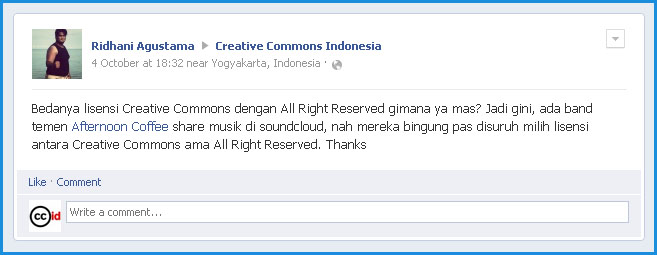
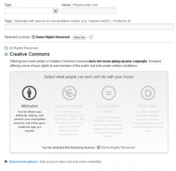

Tanya Jawab Sobat CCID 4 Oktober 2012

Pada facebook Creative Commons Indonesia, Ridhani Agustama bertanya mengenai lisensi Creative Commons:
“Bedanya lisensi Creative Commons dengan All Right Reserved gimana ya mas? Jadi gini, ada band temen Afternoon Coffee share musik di soundcloud, nah mereka bingung pas disuruh milih lisensi antara Creative Commons ama All Right Reserved. Thanks”
Pada pilihan yang dihadirkan SoundCloud, tertulis All Rights Reserved dan Creative Commons atau Some RigReserved. Apabila Anda memilih All Rights Reserved, maka berkas (ciptaan) yang Anda unggah dilindungi oleh hak cipta konvensional, yaitu setiap orang harus meminta izin secara langsung kepada Anda untuk melakukan segala bentuk tindakan apapun terhadap ciptaan Anda. “Segala bentuk tindakan” yang dimaksud termasuk tindakan membuat salinan, membuat ciptaan turunan (menggubah), sampai dengan mendapatkan keuntungan komersial (menjual).

Apabila Anda memilih Creative Commons, maka Anda memilih untuk menyebarluaskan ciptaan dengan lisensi Creative Commons. Lisensi Creative Commons adalah bentuk alternatif perjanjian hak cipta, sehingga bukanlah bentuk pelepasan hak cipta. Lisensi Creative Commons berlaku di Indonesia berdasarkan Pasal 45 Undang-Undang No. 19 Tahun 2002 tentang Hak Cipta
Dengan menggunakan lisensi Creative Commons, Anda dapat menentukan sendiri batasan yang Anda bolehkan untuk pihak lain dalam menggunakan ciptaan Anda. Keempat pilihan yang Anda lihat pada laman SoundCloud tersebut adalah spektrum pilihan lisensi Creative Commons.
- Attribution (Atribusi/BY): Anda memperbolehkan orang lain untuk menyalin, mendistribusikan, menampilkan, dan mempertunjukkan ciptaan Anda dan/atau ciptaan turunannya, selama tetap mencantumkan nama Anda.
- Noncommercial (Non-Komersial/NC): Anda memperbolehkan orang lain untuk menyalin, mendistribusikan, menampilkan, dan mempertunjukkan ciptaan Anda dan/atau ciptaan turunannya, selama bukan untuk memperoleh keuntungan komersial.
- No Derivative Works (Tanpa Turunan/ND): Anda memperbolehkan orang lain untuk menyalin, mendistribusikan, menampilkan, dan mempertunjukkan ciptaan Anda.
- Share Alike (Berbagi Serupa/SA): Anda memperbolehkan orang lain untuk mendistribusikan ciptaan turunan asal dilisensikan dengan suatu lisensi yang identik dengan ciptaan asli.
CONTOH KASUS (Sumber: Enrico Aditjondro, EngageMedia)
Teman-teman dari EngageMedia pernah membantu pembuatan video ‘Pemburu Flu Burung’. Video ini diproduksi di tahun 2008 ketika Food and Agriculture Organization (FAO) menjalankan program bernama ‘Human Faces of Avian Influenza’ dimana para penggiat media di beberapa negara diajak untuk membuat produk media mengenai flu burung yang dilihat dari sisi manusia. Ada dua video dari Indonesia yang diproduksi, salah satunya adalah video di atas yang diproduksi oleh tim RCTI. Hasil-hasil dari proyek ini kemudian dipresentasikan di berbagai negara, dan FAO awalnya berniat untuk mengikutsertakan beberapa produk tersebut ke dalam berbagai festival dan pemutaran yang lebih luas di Eropa. Sayangnya, video ‘Pemburu Flu Burung’ di atas terlalu sarat dengan audio “courtesy of …” alias tanpa izin pemegang hak cipta, sehingga tidak dapat “dibawa” ke ruang publik yang lebih luas. EngageMedia mencoba mendorong tim RCTI untuk mengubah musik-musik yang ada di dalam video tersebut, namun tentu saja itu memakan waktu yang banyak juga dan mereka tidak sanggup melakukannya dalam jangka waktu yang diinginkan. EngageMedia juga sebenarnya sudah mengingatkan mengenai hak cipta musik-musik tersebut dalam awal proses produksi video ‘Pemburu Flu Burung’. Andai menggunakan musik berlisensi Creative Commons, ceritanya mungkin bisa berbeda.
Contoh lain terkait penggunaan lisensi CC adalah serial video Kalyana Shira yang berjudul ‘Pertaruhan’ atau ‘At Stake’. Setelah serial video ini keliling di berbagai bioskop, DVD terjual, dan lainnya, akhirnya management Kalyana Shira mengubah ketentuan hak cipta menjadi menggunakan lisensi CC agar dapat dipublikasi lebih luas di internet lewat EngageMedia. Contoh yang terbaru adalah kompilasi video-video Papua EngageMedia yang dipublikasikan EngageMedia dengan lisensi CC pada situs web http://www.papuanvoices.net/. Penggunaan lisensi CC ini justru bermanfaat dalam penggunaan kompilasi video ini dalam ruang-ruang kelas dimana guru/dosen/pengajar dapat mengunduh secara mudah dan mendiskusikan video-video tersebut menggunakan ‘Study Guide’ yang memang disiapkan untuk memancing diskusi.
KETERANGAN LEBIH LANJUT
Terdapat 6 jenis lisensi Creative Commons yang dapat Anda pilih, dengan mengkombinasikan spektrum di atas. Keenam jenis lisensi Creative Commons adalah (klik pranala di bawah untuk melihat teks lisensi Creative Commons dalam Bahasa Indonesia):
Sebagaimana dapat Anda lihat, ketentuan BY (Atribusi) adalah ketentuan yang selalu ada pada setiap jenis lisensi CC - sehingga pada pilihan yang muncul pada laman SoundCloud, Anda tidak dapat memilih untuk tidak menggunakan ketentuan Atribusi.
Apabila kelompok musik teman Anda ingin menyebarluaskan ciptaannya secara gratis, kami sarankan kelompok musik teman Anda untuk menggunakan lisensi CC BY. Dengan menggunakan lisensi CC BY, maka sebuah berkas musik dapat diunduh bebas dan disalin oleh siapapun. Orang lain juga dapat menggubah (atau istilah populer dalam dunia musik: membuat remix atau mash-up) ciptaan kelompok musik teman Anda, namun orang lain tetap harus mencantumkan nama “Afternoon Coffee”. Dengan demikian, nama dan musik buatan Afternoon Coffee dapat tersebarluaskan dengan mudah, gratis, dan pencipta tetap memiliki hak cipta atas musik yang dibagikan.
Apabila Anda masih ragu mengenai lisensi Creative Commons, Anda dapat melihat poster kami pada http://www.scribd.com/doc/89754342/Poster-Creative-Commons-Indonesia. Anda juga dapat menghubungi kami secara langsung melalui surel info@creativecommons.or.id. Apabila tertarik untuk bergabung dalam milis CCID, dapat ikut bergabung melalui cc-id@googlegroups.com.
Semoga membantu. Pokoknya Creative Commons!
Tags:
Oleh: Alifia Qonita Sudharto
15 Oct 2012Kategori:
Berita Terbaru
- Lokakarya Hak Cipta dan Lisensi Creative Commons di Pekanbaru
- Pengumuman Resmi: Hasil Akhir Training of Trainers Creative Commons Indonesia
- Literatur tentang Model Bisnis Terbuka "Made With CC"
- Data dan Artikel Ilmiah Terbuka dari PLOS!
- Konten Format Model 3 Dimensi Berilsensi CC di Platform Sketchfab